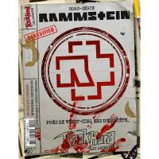
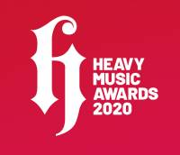
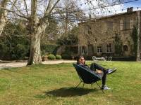
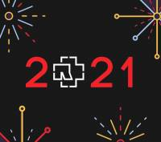

Street Rail Road
| DATE | LIEU |
|---|---|
| 05/05/2021 | Salle des Fêtes de Laventie |
| 07/05/2021 | Salle des Fêtes de Laventie |
| 09/05/2021 | Salle des Fêtes de Laventie |
| 11/05/2021 | Salle des Fêtes de Laventie |
| 13/05/2021 | Salle des Fêtes de Laventie |
| 15/05/2021 | Salle des Fêtes de Laventie |
| 17/05/2021 | Salle des Fêtes de Laventie |
| 19/05/2021 | Salle des Fêtes de Laventie |
| 21/05/2021 | Salle des Fêtes de Laventie |
| 23/05/2021 | Salle des Fêtes de Laventie |
20 mars 2021
Le magazine Rock Hard va sortir le 26 mars un hors-série "Rammstein : Les archives" avec pas moins de 15 interviews de Rammstein avec Richard Z. Kruspe, Till Lindemann, Oliver Riedel et Christoph Schneider (réalisées en 1997, 1998, 2001, 2004, 2005, 2009), ainsi qu'avec le réalisateur Jonas Åkerlund (2017) et le producteur Jacob Hellner (2020).
04 oct. 2020
Herzeleid XXV (Anniversary Edition) est disponible en pré-commande. L'album sortira le 4 décembre 2020 (certaines boutiques indiquent le 27 novembre par erreur) en CD digipack et double vinyle.
09 sept. 2020
Rammstein vient de remporter un Heavy Music Award dans la catégorie « meilleur groupe live ».
14 sept. 2020
Il n'y a plus de doute : Rammstein est de retour aux studios La Fabrique, où le dernier album avait été enregistré ! Certains membres et ingénieurs du groupe ont été apercus à Saint-Rémy-de-Provence, où se situe le studio. D'autres personnes habituellement présentes en studio avec le groupe ont indiqué se rendre en France sur les réseaux sociaux.
01 janv. 2021
Après la difficile année 2020 que nous avons tous traversés, Rammstein World souhaite à tous les fans de Rammstein une excellente année 2021 !